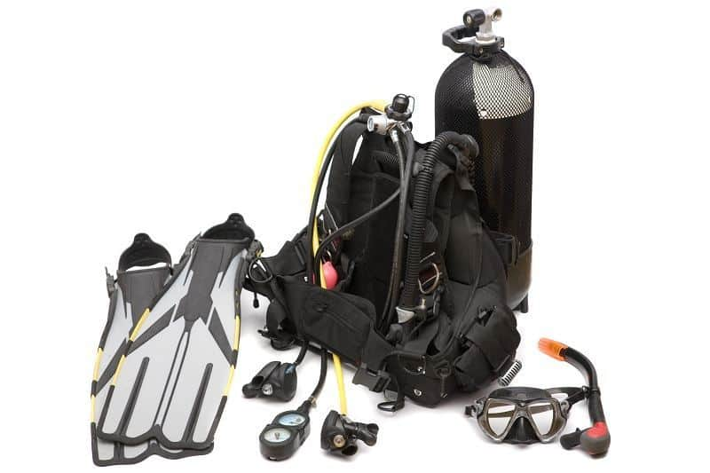

Prijzen
Duiken is een dure sport. De apparatuur is erg duur en moet goed onderhouden worden. Niet alleen de apparatuur is duur maar ook de lessen. De kosten verschillen per cursus maar liggen rond de €45 contributie per maand, eenmalig ongeveer €50 euro voor het lesmateriaal en examen, ongeveer €30-40 euro per buitenduik (meestal heb je 2 buitenduiken per cursus maar soms ook 4) en €15 voor een hard copy van je brevet. Als je op vakantie wilt duiken liggen de kosten al gauw rond de €50-70 per duik.
Als je zelf je eigen set aanschaft is dat ook vrij duur. Een basisuitrusting bestaat uit een trimvest, automatenset, vinnen, masker, loodgordel, duikpak, duikschoenen en eventueel een luchtfles of handschoenen.
Hieronder zie je de gemiddelde kosten voor een duikset:
| Onderdeel | Prijs |
|---|---|
| Trimvest | +/- €200,- |
| Automatenset | +/- €350,- |
| Vinnen | +/- €50,- |
| Masker | +/- €50,- |
| Loodgordel | +/- €30,- |
| Duikpak | +/- €200,- |
| Duikschoenen | +/- €40,- |
| Luchtfles | +/- €200,- |
| Handschoenen | +/- €30,- |
| Totaal | +/- €1.150,- |
